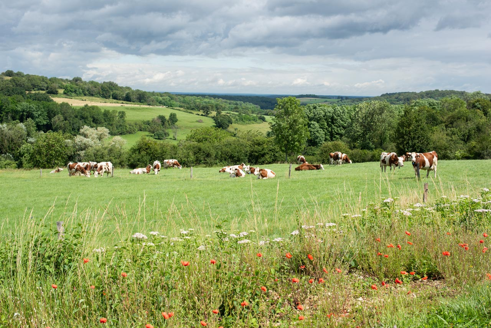

🍪images/petit-jura.jpg
LE CLASSIQUE
Le Petit Jura
Le biscuit doré qui accompagne parfaitement la pause-café.
3,20 €
Des biscuits à partager, une touche de gourmandise et un attachement sincère à notre coin de Franche-Comté.
Le biscuit doré qui accompagne parfaitement la pause-café.
Une rencontre croustillante avec le chocolat.
Une note douce qui rappelle les balades en forêt.

Entre la Loue, les forêts, les villages de caractère et les reliefs jurassiens, notre territoire est une source d'inspiration permanente.
Explorer notre Jura →Des recettes lisibles et une gourmandise sans détour.
Une identité inspirée par Dole et le Jura.
Du sachet individuel jusqu'à la palette, chaque niveau compte.